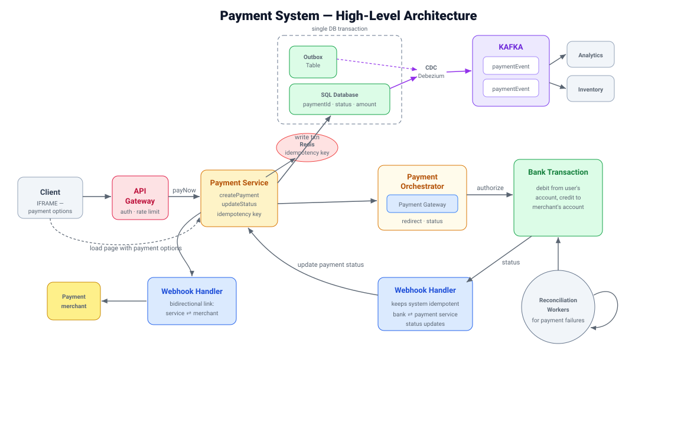

The architecture at a glance
A payment request enters through the gateway, gets an idempotency guard at the payment service, is authorized through an orchestrator talking to the bank, and emits events reliably via an outbox that Debezium streams to Kafka. Webhooks and reconciliation close the loop when things go wrong.

Non-functional: scalable · consistency over availability · payment writes happen inside a transaction · payment events fan out to all services · plus fraud detection and preventing unauthorized payments.
API Gateway
The single entry point for all payment requests. It's the front door, so it carries the cross-cutting concerns that every request needs before it touches business logic.
- Authentication — verify who is making the request.
- Rate limiting — protect downstream services from spikes and abuse.
- Request routing — send traffic to the right service.
On the client side, the payment page is typically loaded in an IFRAME that renders the available payment options, so sensitive card entry stays isolated.
Payment Service & Idempotency
This service creates and manages payment transactions. Its hardest job is making sure a retried or duplicated request never results in two charges. It uses a two-layer defense.
Redis — fast concurrent guard
An atomic idempotency check in Redis stops two concurrent requests with the same idempotency key from both starting to process. First one wins; the rest short-circuit.
SQL DB — durable guard
Payment details (with the idempotency key) are persisted in SQL, giving durable duplicate protection that survives restarts and cache loss.
Payment Orchestrator
Coordinates processing across different payment methods so the rest of the system doesn't need to know the quirks of each one.
- Communicates with external payment gateways.
- Handles payment authorization and status retrieval.
- Drives the actual bank transaction — debiting the user's account and crediting the merchant's.
Transactional Outbox Pattern
The classic problem: you update the payment record and you want to publish an event to Kafka. If you do these as two separate steps and the app crashes in between, you either lose the event or publish one for a transaction that never committed.
The outbox pattern solves this by writing the payment record and an event row into an outbox table within the same database transaction. Either both commit or neither does.
BEGIN;
UPDATE payments
SET status = 'AUTHORIZED'
WHERE payment_id = :id;
INSERT INTO outbox (aggregate_id, type, payload)
VALUES (:id, 'PaymentAuthorized', :json);
COMMIT;Debezium CDC + Kafka
Now the event is safely in the outbox table. A separate, asynchronous mechanism publishes it — without the payment service having to call Kafka itself.
- Debezium reads committed changes straight from the database transaction log (CDC — change data capture), so it only ever sees data that actually committed.
- It publishes those events to Kafka asynchronously.
- Downstream services like Inventory and Analytics consume independently and at their own pace.
Webhook Handler
Payment gateways report final outcomes asynchronously — the authorization you kicked off may settle seconds or minutes later. The webhook handler receives those status updates.
- Receives asynchronous payment status updates from the gateway/bank.
- Handles duplicate notifications — gateways often send the same webhook more than once — and updates payment status safely (idempotently).
- Maintains a bidirectional link between the payment service and the merchant to keep both sides in sync.
Reconciliation Workers
Even with all of the above, some transactions end up in an uncertain state — a timeout, a crash, a webhook that never arrived. Reconciliation is the safety net.
- Identify pending or uncertain transactions.
- Verify the actual payment status directly with the gateway.
- Prevent unnecessary retries and potential double charges by trusting the gateway's authoritative answer.
Putting the flow together
- Client loads the payment IFRAME; request hits the API Gateway (auth, rate limit).
- Payment Service checks the idempotency key in Redis (concurrent guard) and SQL (durable guard).
- It writes the payment record and an outbox row in one transaction.
- Orchestrator authorizes through the gateway; the bank debits the user and credits the merchant.
- Debezium captures the committed outbox row and publishes to Kafka; Analytics and Inventory consume idempotently.
- The Webhook Handler receives the gateway's final status (deduped) and updates the payment.
- Reconciliation Workers sweep anything stuck and verify it against the gateway.
🔑 Key design takeaways
- Idempotency prevents duplicate payment processing.
- Database transactions ensure atomic business and outbox updates.
- Outbox + CDC enables reliable asynchronous event publishing.
- Idempotent Kafka consumers handle duplicate event delivery.
- Reconciliation recovers from crashes, timeouts, and uncertain outcomes.